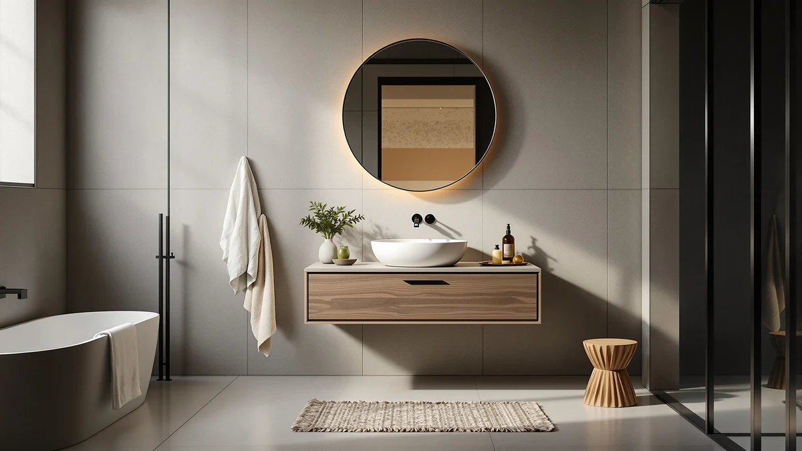

Little Tulip Floating Bathroom Vanity Review (2026): Worth It?
Prices and picks verified as of November 2026. Independent, reader-supported reviews.


Quick Answer
The Little Tulip 36" Floating Bathroom Vanity costs $569.99 and packs a sink, a top, and two soft-close drawers into a wall-mounted cabinet sized for a small bathroom, a footprint none of the three 60-inch alternatives below can match. It runs about $20 more than the priciest of those alternatives, but a 36-inch single-sink cabinet solves a different problem than a 60-inch double-sink one, and this review explains which bathroom each size actually fits.
Our pick: Little Tulip - 36" Floating — $569.99 Check Price on Amazon
Bottom line: our top pick is the Little Tulip - 36" Floating Bathroom Vanity with Sink at $569.99.
Things to Know Before You Buy
- Price range: the four vanities in this little tulip floating bathroom vanity review span $539.99 to $599.99, a gap of $60.
- None of the four listings carries a public rating or review count yet on Amazon, so this comparison leans on manufacturer specs and listed features instead of owner feedback.
- The Little Tulip is the only 36-inch, single-sink model here; the eclife and T4TREAM are 60 inches wide with double sinks, and the CozyHommie sits in between at 42 inches.
- Material varies by pick: the Little Tulip and eclife use MDF and engineered wood, the T4TREAM pairs an oak-toned cabinet with an integrated resin sink, and the CozyHommie is solid wood and hardwood.
- A wall-mounted vanity like the Little Tulip needs mounting into wall studs or heavy-duty anchors, so confirm your bathroom wall can support the combined weight before you buy.
This little tulip floating bathroom vanity review breaks down what $569.99 buys in a 36-inch wall-mounted cabinet, and lines the Little Tulip up against three 60-inch alternatives so you can see what a bigger budget buys instead. You might want a compact floating vanity because it frees up floor space in a small bathroom or powder room and keeps the cabinet out of the way of a door swing, but the three larger options compared here trade that small-space advantage for double-sink counter space and, in two cases, a floor-standing cabinet instead of a wall mount. A single-sink 36-inch cabinet also usually means one person uses the counter at a time, so the included sink and top matter more here than they would on a vanity built for two.
The short version: the Little Tulip wins on fit. At 36 inches wide with a single sink, it is the only pick here that will actually slot into a small bathroom or half bath where a 60-inch double-sink cabinet simply will not go, and the included top and basin mean you are not pricing in a separate sink purchase. It loses ground on value per inch, since you are paying nearly as much for 36 inches of cabinet as the 60-inch alternatives below charge for almost double the width. If floor space and a wall-mounted footprint matter more to you than counter space, the Little Tulip 36" floating bathroom vanity is the stronger pick of the four, and the write-up below explains why, along with where each alternative does better.
Why You Should Trust Us
Ilane Tall covers bathroom fixtures and furniture for Best Bathroom Vanities and put together this little tulip floating bathroom vanity review by comparing manufacturer specs, current Amazon pricing, and listed features rather than repeating marketing copy. We do not run a fake testing lab or claim to have installed every vanity we cover. Instead, we cross-check dimensions, materials, and what ships with each listing, and we say so plainly when a product has no review history to back a confident recommendation. That distinction matters here, since none of the four vanities in this comparison has collected a public rating yet.
Our Research Experience
This review doesn't involve physical testing. We compared the Little Tulip 36" floating bathroom vanity against three close-priced alternatives using the manufacturer's listed materials, dimensions, and included hardware, since none of the four products here, the Little Tulip, the eclife, the T4TREAM, or the CozyHommie, has a public rating or review count yet on Amazon. Without owner reviews to check claims against, we relied on the specs and features each manufacturer documents on the listing itself, and we flag that gap throughout this little tulip floating bathroom vanity review so you can weigh it accordingly. When a detail sounds like it might not hold up, such as an engineered wood core mounted to a wall above running water, we say so instead of repeating the listing copy at face value.
Overview & Specs

Little Tulip - 36" Floating
What we like
- Ships with a sink and top already attached, so you are not pricing a separate basin into the $569.99 total
- 36-inch wall-mounted footprint opens up floor space in a small bathroom, unlike the 60-inch alternatives below
- Two soft-close drawers, including a top drawer with a U-shaped cutout built around the plumbing, keep small items organized without banging shut
Flaws but not dealbreakers
- No public rating or review count on Amazon yet, so you're relying on the listing details rather than owner feedback
- The listing doesn't mention a faucet, so budget for one separately on top of the $569.99 price
- Single sink and 36-inch width won't suit a bathroom that needs double-sink counter space, unlike the three 60-inch alternatives below
| Material | MDF / engineered wood |
| Size | 36 Inch |
The Little Tulip 36" floating bathroom vanity anchors this review because it is the only pick here sized for a bathroom that can't fit a 60-inch cabinet. The $569.99 price includes the sink and the top, part of what Little Tulip calls its Lavanda Collection, finished in a brown walnut tone with a seamless 45-degree finger pull instead of hardware handles. The cabinet mounts to the wall rather than sitting on the floor, which opens up the floor space underneath for cleaning, and the two drawers use soft-close glides so they don't slam shut the way a standard cabinet hinge would. The top drawer has a U-shaped cutout built around the plumbing, a detail that matters on a 36-inch cabinet where the drain and supply lines sit closer to the drawer box than they would on a wider vanity.
Where the Little Tulip gives something up is width and track record. At 36 inches with a single sink, it does not offer the double-sink counter space that the three 60-inch alternatives below provide, and the finger-pull, handle-free drawer fronts are a style choice rather than a functional upgrade. Like the other three vanities in this little tulip floating bathroom vanity review, it also has no public rating or review count on Amazon yet, so you are judging it on listed features rather than owner feedback. Because it floats off the wall, confirm your studs can support the combined weight of the cabinet, top, and stored items before you mount it, and check whether your existing plumbing lines up with a 36-inch single-sink layout before you order.
What We Liked
Across this little tulip floating bathroom vanity review, the bundled sink and top stand out most, since the three alternatives below either charge extra for plumbing hardware or, in the CozyHommie's case, ship as a sink base cabinet without a confirmed basin. The 36-inch wall-mounted footprint also frees up floor space that none of the larger cabinets can match, which helps in a small bathroom or half bath where every square foot of floor counts. The soft-close drawers and the U-shaped cutout built around the plumbing read as more deliberate than a plain flat-front cabinet, and the finger-pull design keeps the front panel clean without hardware to catch a towel on.
What Could Be Better
The biggest gap is review history. Because the listing has no rating or review count yet, you cannot lean on owner feedback the way you might want for a $570 vanity, and that is true of all four products compared in this little tulip floating bathroom vanity review, not just the Little Tulip. The listing also does not mention a faucet, so factor that cost into your budget separately. Engineered wood construction asks for more care around standing water than the solid wood used in the CozyHommie below, and installing a floating vanity takes more planning than a floor-mounted one, since it depends on the wall studs lining up with the mounting points rather than setting a cabinet down.
Who Is It For?
This vanity fits a small bathroom or powder room where one person gets ready at a time and floor space is tight enough that a floating design actually helps with cleaning underneath. It also suits anyone who would rather buy one combo than shop separately for a cabinet, sink, and top, since the Little Tulip 36" floating bathroom vanity bundles the first two into the $569.99 price. It is a weaker fit if your bathroom wall cannot support a floating mount, if two people share the counter every morning, or if you would rather buy a vanity with an established review history first, in which case the 60-inch alternatives below are worth a look. It is also not the right pick if solid wood durability matters more to you than a floating footprint, since the CozyHommie's solid wood build handles that better than any engineered-wood cabinet can.
Alternatives to Consider
If the Little Tulip doesn't fit your bathroom or your priorities, these three alternatives from this little tulip floating bathroom vanity review cover different needs: a floating double-sink combo with bundled plumbing (read our full eclife review), a fluted floor-standing cabinet with an integrated resin sink, and a solid wood RTA cabinet built around a single basin (see our full CozyHommie review). The eclife and T4TREAM are both 60 inches wide, roughly double the Little Tulip's footprint, while the CozyHommie splits the difference at 42 inches, and only the eclife shares the Little Tulip's wall-mounted design, so weigh floor space against counter space before you switch picks.

Also Great
eclife 60" Floating Bathroom Vanity
A 60-inch floating double-sink combo that bundles a faucet and drain with the sink, for a shared bathroom that wants the Little Tulip's wall-mounted footprint but needs two sinks and more counter space.
$549.99
Check Price on Amazon
Premium Choice
T4TREAM 60" Fluted Bathroom Vanity
A 60-inch floor-standing cabinet with a fluted front, an integrated double resin sink, and three pre-drilled faucet holes, for a bathroom that wants a dual-sink mid-century look and doesn't need the Little Tulip's floating design.
$599.99
Check Price on Amazon
Best Value
CozyHommie Solid Wood RTA Bathroom
A 42-inch solid wood and hardwood sink base cabinet with three left-side drawers, for a bathroom that wants a wider single-sink footprint and more moisture-resistant construction than the Little Tulip's engineered wood.
$539.99
Check Price on AmazonDoes the Little Tulip 36" floating vanity include a sink and faucet?
It includes a sink and a top, but not a faucet.
Can a floating vanity like the Little Tulip hold the same weight as a floor-mounted cabinet?
It depends on your wall, not the cabinet.
Frequently Asked Questions
Does the Little Tulip 36" floating vanity include a sink and faucet?
It includes a sink and a top, but not a faucet. The Little Tulip 36" floating bathroom vanity ships with the sink and top already attached as part of the $569.99 price, but the listing doesn't mention a faucet, so plan to buy one separately and connect the drain lines during installation.
Can a floating vanity like the Little Tulip hold the same weight as a floor-mounted cabinet?
It depends on your wall, not the cabinet. A wall-mounted vanity needs to anchor into the studs or use heavy-duty hardware rated for the combined weight of the cabinet, top, and whatever you store inside, so check your bathroom wall before mounting this Little Tulip 36" floating bathroom vanity or any other floating model.
Is engineered wood construction a problem for a small bathroom vanity?
Not under normal use. The Little Tulip's E1-rated engineered wood core handles everyday bathroom humidity fine, but it swells faster than the solid wood used in the CozyHommie alternative above if water sits on the surface for hours, so wipe up spills around the sink promptly.
Final Verdict
This little tulip floating bathroom vanity review comes down to a straightforward trade: the Little Tulip offers the only 36-inch, wall-mounted footprint of the four, with a sink and top already bundled into the $569.99 price, in exchange for less counter space than the three 60-inch alternatives. For a small bathroom or powder room where floor space is the priority and one sink is enough, that combination makes the Little Tulip the strongest pick of the four, even without a public review history to lean on yet. If your bathroom can fit a wider cabinet, or two people share the counter every morning, the eclife, T4TREAM, or CozyHommie alternatives above are worth a closer look instead.